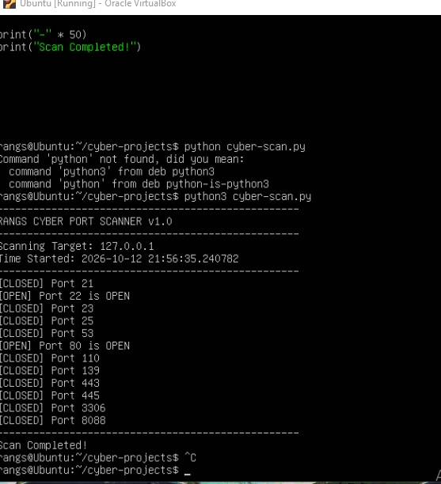
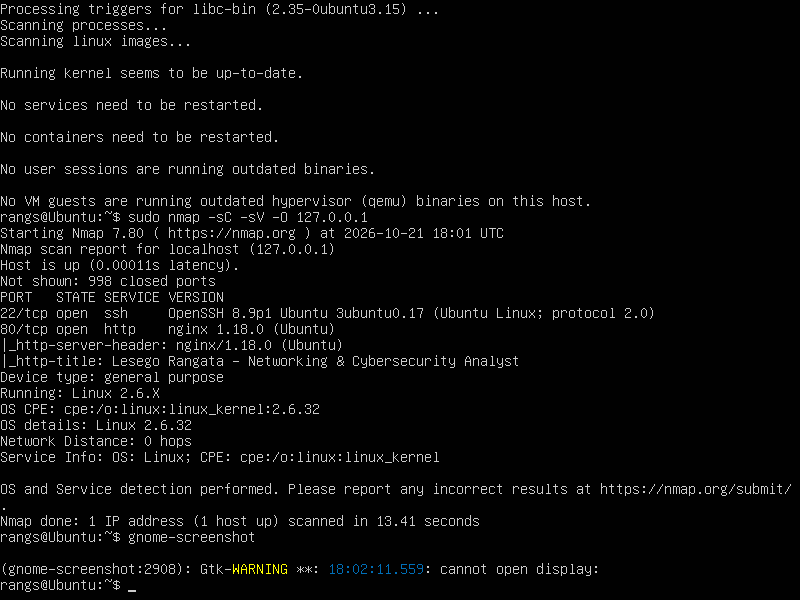
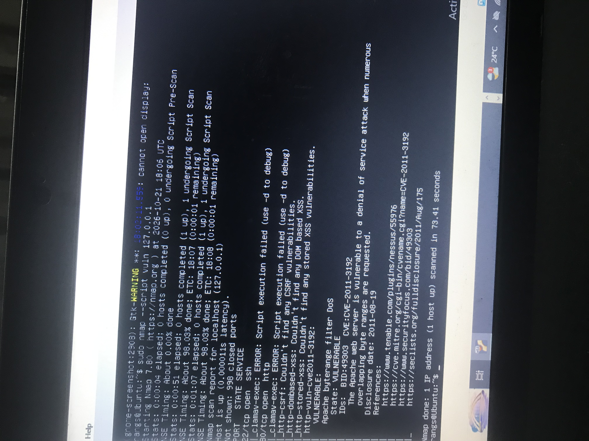

CCNA Fundamentals + Linux Server Admin | Learning by Attacking & Defending
Started with CCNA networking theory + Java GUI development + Calculus L3 problem solving. Now building hands-on cybersecurity skills by deploying and securing my own Ubuntu server. Current lab: Nginx web server behind bridged networking, managed via SSH. Goal: Master attack + Defense tools to replace internship with real experience.
Objective: Deploy a hardened Linux web server and host a live CV.
Commands Used: sudo apt update, sudo ufw enable, systemct1 status nginx, ssh-keygen
Status: Live & Verified - 12 Oct 2026
Objective: Build a custom Python attack tool to enumerate open network services - core SOC Analyst / Penetration Tester skill.

The Code That Made It Possible (cyber-scan.py):
socket module to create TCP connectionsscan_port(ip, port) with 1s timeoutCommands Used:
mkdir -p ~/cyber-projects
nano cyber-scan.py (wrote 29 lines Python)
python3 cyber-scan.py
Target: 127.0.0.1 (localhost)
Results:
Successfully detected OPEN ports: 22/SSH and 80/HTTP
Proved scanner logic works for future external target scans
Screenshot captured as proof of execution
Tools: Python3, Linux Terminal, Ubuntu 22.04 LTS, VirtualBox, Socket Programming, Bash
Date:Completed 12 Oct 2026
Objective: Service enumeration and automated CVE detection - Core SOC Analyst skill.
Scan 1 - Service & Discovery (nmap -sC -sV -O):

Scan 2 - Vulnerability Assessment (--script vuln):

Methodology:
nmap -sC -sV -O = OS + Service Version + Safe Scripts--script vuln = 50+ automated CVE checksFindings: OpenSSH 8.9p1 + nginx 1.18.0 | CVE-2011-3192 Detected (Apache Byterange DoS) | XXS/CSRF Negative | Tools: Nmap 7.80, NSE | Date: 21 Oct 2026
Deployed Ubuntu 22.04 on VirtualBox. Configured bridged networking, static IP, Nginx, SSH. This is my sandbox for testing attacks + defenses before touching real networks.
Planning to deploy vulnerable web app like DVWA on this server, then practice OWASP top 10.